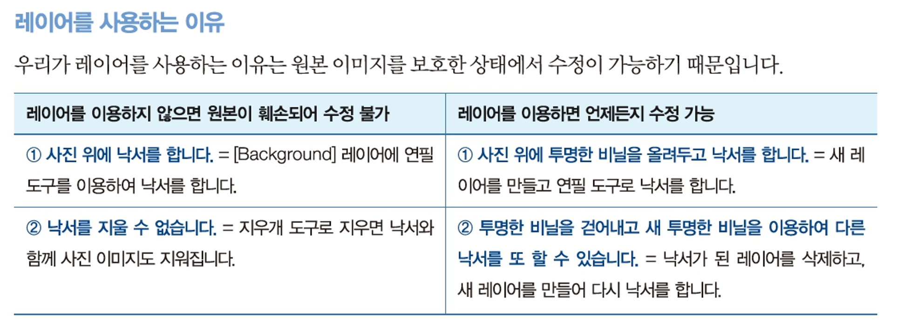
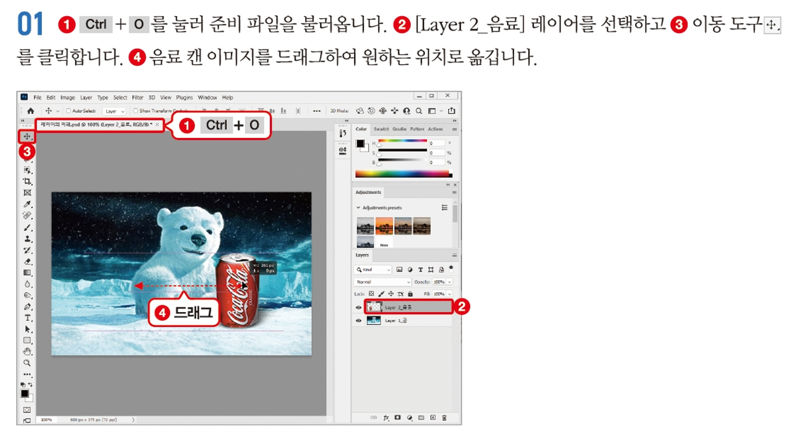
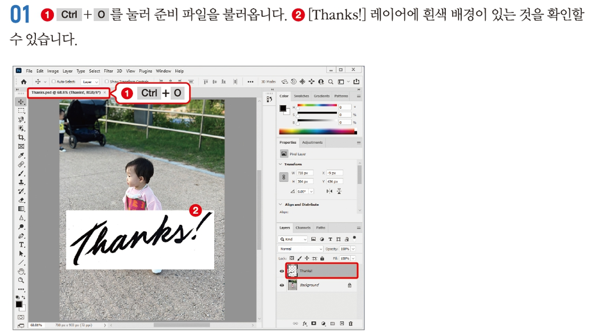
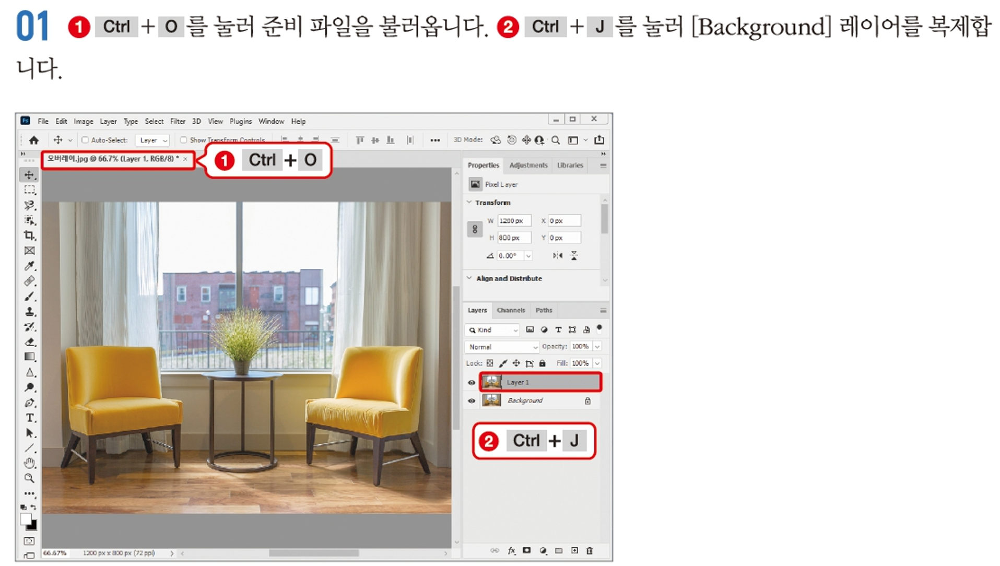

[8차시] Ch03-01_레이어(Layer) 02_채널(Channel)
1. 레이어의 기본개념
1.1. 레이어의 이해




레이어의 이해.psd (click🖱️)
1.2. 흰색을 투명하게 하는 Multiply 모드


Thanks.psd (click🖱️)
1.3. 검은색을 투명하게 하는 Screen 모드

Fire.psd (click🖱️)
1.4. 이미지 선명도를 높이는 Overlay 모드


오버레이.jpg (click🖱️)
1.5. 빛을 더 강하게 표현하는 Color Dodge 모드

1.6. 레이어 마스크 적용하기

발레리나.jpg (click🖱️)
1.7. 클리핑 마스크 적용하기

오렌지.jpg (click🖱️)
1.8. 조정 레이어 활용하기


등대.jpg (click🖱️)
1.9. 스마트 오브젝트 레이어로 편집하기

스마트오브젝트편집.psd (click🖱️)

2. 채널의 기본이해
2.1. 색상 채널로 보정하기

채널.jpg (click🖱️)
2.2. 컬러 모드 변경하고 채널 확인하기

컬러모드.jpg (click🖱️)
2.3. 알파 채널로 일부만 흑백으로 만들기

bird.jpg (click🖱️)